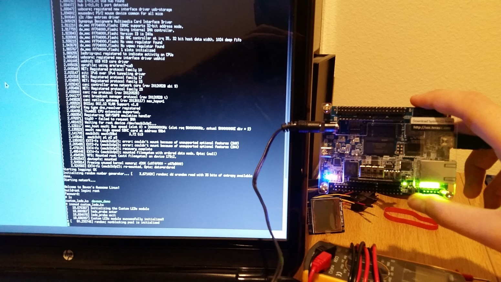

Beginner's Guide to Embedded Linux on Altera SoC's
A guide that walks users through every step of creating a simple Embedded Linux distro from hand
Going from a basic hardware design to creating a complete Embedded Linux distribution with custom drivers and applications is a difficult process with a high-learning curve. To help get our customers up to speed quickly, I developed a beginner’s guide to Embedded Linux using Altera programmable SoCs. Once the guide is done being peer reviewed by engineers at Altera, it will be posted onto Rocketboards.org (Altera’s Open Source community portal). This guide walks the user step-by-step through the following Embedded Linux topics:
- Building a simple hardware design using the Altera Design Suite (Quartus/Qsys)
- Understanding core Embedded Linux concepts and boot flow
- Generating a preloader (first stage bootloader)
- Configuring and compiling U-Boot (second stage bootloader)
- Generating and compiling the device tree
- Configuring and compiling the Linux Kernel for a Cyclone V SoC device
- Generating a root filesystem (containing BusyBox) using Buildroot
- Creating an SD Card image and testing the design
- Creating a user-space software application that utilizes the programmable logic hardware
- Creating a kernel-space device driver for hardware modules residing in the FPGA

The boot-up and login sequence for the Embedded Linux distro (left) and all of the LEDs enabled via the kernel-space driver (right)